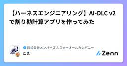

株式会社メンバーズ AIフォーオールカンパニーのフィード
https://zenn.dev/p/aiforall
すべての人に、AIと共に進む未来を。「一人ひとりが自分らしく働きながら活躍できる社会を創る」をミッションとして、企業のAI活用をトータルに支援するサービスを展開しています。
フィード

【ハーネスエンジニアリング】AI-DLC v2で割り勘計算アプリを作ってみた
株式会社メンバーズ AIフォーオールカンパニーのフィード
はじめに最近はAIエージェントを使った開発がすっかり当たり前になってきています。AIエージェントに組み込んで使う、いわゆる「ハーネス」のツールやスキル、プラグインなども豊富にあって、どれを使えばいいのか迷ってしまうほどです。本記事では、そうしたツールの一つであるAI-DLC v2を使って割り勘計算のシンプルなWebアプリを作り、AI駆動開発の流れを体験します。結論からいうと、AIが質問し、人間が承認して進む流れは最後まで崩れず、アプリを完成させられました。ただし、承認時に表示される要約だけでは、回答で決めきれていなかった点に気づけず、レビュー結果のファイルを直接読む必要がありま...
3日前

AIで変わるリバースエンジニアリング：REAの紹介と、今後のアプリ開発への懸念
株式会社メンバーズ AIフォーオールカンパニーのフィード
ソースコードが公開されていないアプリの機能を調べるのは、簡単ではありません。リバースエンジニアリング自体は以前から行われてきましたが、解析ツールの操作や、コンパイル後のコードを読み解くための専門知識が必要でした。そんな中、AIエージェントから解析ツールを使えるようにする「REA (Reverse Engineer Anything)」というMCPツールが登場し、AIを活用したリバースエンジニアリングが可能になりました。今回の記事ではこのMCPツールを紹介します。また、このツールを通じて今後開発者として意識すべきことを私の見解ではありますが記載していきます。 REA (Reverse...
10日前
「暗号化してあるから情報漏えいしても大丈夫」は本当？ 古い暗号DESを総当たりで破ってみた
株式会社メンバーズ AIフォーオールカンパニーのフィード
はじめに情報漏えいのニュースを目にすることが増えています。不正アクセスやランサムウェア、設定ミス、端末の紛失など、原因はさまざまです。漏えいが起きたとき、被害の大きさを左右するのがデータが暗号化されていたかどうかです。暗号化されていれば、鍵を持たない人は中身を読めません。ただし、それは暗号が十分に強い場合に限ります。古い暗号で暗号化されたデータは、漏えいした後に攻撃者が時間をかけて解読できてしまいます。では、古い暗号は実際にどのくらい簡単に破れるのでしょうか。代表的な例として、「古いので使ってはいけない」とよく言われるDESを取り上げます。この記事では、自分で決めた鍵と平文を...
11日前
AIコーディングツールのトークン消費を可視化する「Tokscale」を試してみた
株式会社メンバーズ AIフォーオールカンパニーのフィード
AIコーディングツールのトークン消費を可視化する「Tokscale」を試してみたClaude CodeやCursorなど複数のAIコーディングツールを日常的に使い分けていると、それぞれのツールでどれくらいトークンを使っているのかわからない状態でした。ツールごとに使用量の確認画面がバラバラで、横断して見る手段がありませんでした。そんな悩みを解決してくれるツール「Tokscale」を見つけたので試してみました。 TokscaleとはTokscaleは、ローカルに保存されているAIコーディングツールのセッションログを読み取り、トークン使用量・コスト・モデル別内訳などを横断的に集計...
13日前
AIは人を育てず堕落させるためAI禁止でスパルタ指導をしている話
株式会社メンバーズ AIフォーオールカンパニーのフィード
直近のコーディングエージェントの進化は凄まじく、シニアエンジニア相当の力量どころか、新たな仕様やLLM自体が学習していない技術についても一定の情報やドキュメントを与えるだけで十分なシステムが開発されています。その点については、素晴らしいと思える反面、人がエンジニアとして育たないという課題も発生しています。!注意この記事では、「研修期間」におけるエンジニアへの指導を記載しています。弊社でのクライアント支援ではAI駆動開発も用いられており、全面的に禁止を行っているわけではなく、一定期間の研修において、基礎力を醸成する取り組みとして、一過性のAI禁止を実施しています。弊社では、Cha...
14日前
ベクトルDBを使わない「階層ナビゲーション型RAG」を作って、ベクトルDB版RAGと比較してみた
株式会社メンバーズ AIフォーオールカンパニーのフィード
階層ナビゲーション型RAGとは「階層ナビゲーション型RAG」は、ベクトルDBを使わずに文書を探すRAGです。準備段階で文書の山から階層的な目次を自動で作っておき、質問が来たらLLMがその目次を上から順に辿って、答えが書かれていそうな文書を選びます。質問のたびにベクトル検索をしない点が、一般的なベクトルDB版RAGとの違いです。この記事では、この仕組みを論文の手法(Corpus2Skill)を参考に自作し、ベクトルDB版RAGと同じデータ・同じ質問で比較しました。 結論28文書・20問の小規模な比較では、正答数は同等でした(どちらも20問中16問)。階層ナビゲーション型は...
17日前
Python3.15で追加された番兵値が少し気になったので触ってみた
株式会社メンバーズ AIフォーオールカンパニーのフィード
Python3.15ではいくつかの機能が追加されました。その中で気になったのが「番兵値（センチネル値）」でした。これは、PEP661に定義されており、現在は最新のドキュメント（3.15のドキュメント)でも確認することができます。 番兵値（センチネル値）番兵（Sentinel）の言葉としての意味は以下のとおりです。軍隊で陣地や基地の見張りをする兵士プログラムに於いては、見張りというと語弊がありますが、境界、終端を知ることに使われるもの、いわゆる門番的な役割となります。 番兵値の利用公式のドキュメント通り、使用は簡単です。殆どの場合は、以下の記述のみで十分となります。M...
18日前
GitHub Copilot Computer UseはE2Eテストの代わりになるのか試してみた
株式会社メンバーズ AIフォーオールカンパニーのフィード
はじめにみなさんはE2Eテストを実施していますか？E2Eテストは実際のユーザー操作を想定した形でアプリケーションを検証できる一方で、テストコードの作成コストが高いUI変更によるメンテナンスコストが発生するといった課題があります。そんな中、2026年10月1日にGitHub Copilot CLIおよびGitHub Copilotアプリにて、デスクトップアプリケーションが操作可能な「Computer Use」のパブリックプレビュー提供が開始されました。Computer Useを利用すると、Copilotに実際のブラウザやデスクトップアプリを操作させることが可能です。...
18日前
崩れた文章はLLMに伝わる？ タイポグリセミアを日本語・英語で検証
株式会社メンバーズ AIフォーオールカンパニーのフィード
はじめに「タイポグリセミア」という現象をご存じでしょうか。単語の先頭と末尾の文字さえ合っていれば、途中の文字順が入れ替わっていても人間は問題なく読めてしまう、という有名な話です。RAG やチャット AI を触っていると、ユーザーが送る質問文はきれいな文章ばかりではありません。タイプミスや変換ミス、思わぬ位置のスペース混入など、「文字は崩れているけれど、人間なら意図を汲み取れる」入力になる可能性があります。ここで気になるのが、LLM は文脈も検索結果もなしで、崩れた質問からどこまで本来の意味を復元できるのか という点です。そこで本記事では、日本語・ひらがな・英語でどう変わるかを検...
24日前
【GASとVertexAIとLangChain】GASでOAuth認証が必要なVertex AIでLLM実行
株式会社メンバーズ AIフォーオールカンパニーのフィード
クラウドLLMを接続する場合、APIキーで接続を行う簡単な手法が取られる場合があります。しかし、昨今のセキュリティ事情などから、APIキーではなく、OAuthによる認証を行って、クラウドLLMに接続する手法もあります。この記事では、GAS（Google Apps Script）内でVertex AI（現名称：Agent platform）にOAuthで接続するための手法を紹介します。 原動力通常、OAuthの使用や、クラウドLLMの接続は、開発したアプリケーション内で実行することが多くありますが、Webアプリケーションであればサーバーを準備したり、デスクトップアプリであれば専用の...
1ヶ月前
JevライクなOllamaの「意思決定モデル（nimble/tev1）」をDockerで動かして、3モデルで判定を比べてみた
株式会社メンバーズ AIフォーオールカンパニーのフィード
はじめにollama/ollama:0.35.0 で、「意思決定モデル」と呼ばれる新しい種類のモデルが使えるようになりました。意思決定モデルは、文章を生成するのではなく、「この問い合わせはどのチームに回すか」「返金を求めているか」のような判定を、確率付きで返すモデルです。TypeSafe社の判定API「Jev」に基づく専用のエンドポイントで呼び出します。Ollama 上で動くので、手元の Docker 環境で試してみました。 結論3つのモデル(nimble、tev1:4b、tev1:0.8b)は、どれも Mac の Docker 上で動きました。nimble だけは、D...
1ヶ月前
AIは「ネ申」を「神」と読めるのか？
株式会社メンバーズ AIフォーオールカンパニーのフィード
はじめにネットスラングでは、漢字の一部を別の文字に置き換えて表す書き方を見かけることがあります。たとえば「ネ申」は、カタカナの「ネ」と漢字の「申」を並べて「神」に見立てる表現です。本記事では、このように漢字の構成要素を別の文字として並べた表記を、便宜上「分解文字」と呼びます。こうした表記は単なる文字遊びとして使われる一方で、通常の表記とは異なるため、機械的な文字列処理では意味を取りこぼす可能性があります。では、大規模言語モデルは分解文字を見たとき、元の漢字や熟語としてどの程度解釈できるのでしょうか。単体の文字列、熟語、文章の中に置いた場合で反応が変わるのかを確かめました。 検...
1ヶ月前
Superpowersを試してみた：AI開発フレームワークを活用した設計から実装まで
株式会社メンバーズ AIフォーオールカンパニーのフィード
AIにアプリを作ってもらうとき、いきなりコード生成を依頼すると意図しないコードが生成されがちです。そうなることを防ぐために、作りたいアプリの要件を整理したり、設計をしてからコード生成をしてもらうことで、意図したコードを生成してくれるようになります。今回は、要件の整理から設計、実装、検証までをユーザーに質問しながら進めてくれる「Superpowers」をGitHub Copilot CLIで試してみました。 SuperpowersとはSuperpowers はAIコーディングエージェントに「規律ある開発プロセス」の振る舞いをさせるためのオープンソースのスキルフレームワークです。Cl...
2ヶ月前
文字数・バイト数からのトークン数推定は実際どれくらいズレるのか
株式会社メンバーズ AIフォーオールカンパニーのフィード
背景実務で、LLM への入力テキストがトークン数の上限を超えてエラーになる事象が発生し、対策を検討する場面がありました。対策案として、LLM に投げる前に文字数やバイト数、あるいは tiktoken のようなトークナイザーでトークン数を事前に見積もり、上限を超えそうであれば送信前にエラーを表示する「事前バリデーション」方式が候補に挙がりました。しかし議論の中で、「その見積もりが、実際に LLM に送ったときのトークン数とどこまで一致するかは怪しい」というエンジニアの感覚的な指摘がありました。最終的にはこの場では事前バリデーションを入れず、まず実際に LLM へリクエストを送り、上...
2ヶ月前
AIは錯覚をどう捉えるか
株式会社メンバーズ AIフォーオールカンパニーのフィード
はじめに人間は錯覚を起こす生き物です。脳が「見たままの情報」ではなく「補正した情報」を私たちに見せているからだと言われています。では、画像を扱えるようになったマルチモーダルAIは、こうした錯覚をどう捉えるのでしょうか。人間と同じように騙されるのか、それとも「そういう錯視ですね」とあっさり見抜いてしまうのか。気になったので、有名な錯覚画像をいくつか投げて反応を見てみました。 検証方法今回はWeb上の「Gemini 3.6 Flash」と「Gemini 3.1 Pro」の2つのモデルに画像を添付し、回答してもらいました。手順はシンプルで、以下のルールで進めています。1つの...
2ヶ月前
Amazon Bedrock AgentCoreにおけるマルチエージェント実装
株式会社メンバーズ AIフォーオールカンパニーのフィード
本記事では、AWSのBedrock AgentCoreを用いてマルチエージェントシステムの作り方を解説します。また、2つのAIエージェントが相互にコミュニケーションを取るための技術A2Aを導入し、Strands Agents で作成したエージェント同士を繋げるときの注意点も合わせて紹介します。 Amazon Bedrock AgentCore とはAmazon Bedrock AgentCore（以下 AgentCore）とは、AWS上でAIエージェントをサーバレスで配置するリソースのことです。AgentCore はAWSが開発したStrands Agents フレームワーク以...
2ヶ月前
表記ゆれで埋め込みベクトルの類似度はどれだけ変動するのか 【Amazon Titan Embeddings V2】
株式会社メンバーズ AIフォーオールカンパニーのフィード
はじめにRAG や類似検索を実装していると、「同じことを指しているはずなのに、表記が違うだけで検索に引っかからない」という現象によく遭遇します。server と サーバ、design と デザイン、user と ユーザー のように、人間から見れば同じ意味の語でも、埋め込みモデルはどこまでそれらを「近い」と判断してくれるのでしょうか。そこで本記事では、AWS Bedrock の amazon.titan-embed-text-v2:0 を使い、表記ゆれでベクトルに差が出るかを検証してみました。 前提条件 検証環境項目詳細内容埋め込みモデルIDamazo...
2ヶ月前
Hermes Agentを用いて、自己成長するコードレビューエージェントを作成してみた
株式会社メンバーズ AIフォーオールカンパニーのフィード
はじめにエージェントに「SKILL」を定義してタスクを任せる際、新たなルールや観点が発生するたびに人間が手動で SKILL.md を書き換えるのは大きな手間です。 そこで今回は、Nous Researchの Hermes Agent を活用し、LLM-as-a-Judgeによるレビューをもとに、エージェント自身が自律的に SKILL.md をアップデートして成長するコードレビューエージェントを作成してみました。 Hermes AgentとはHermes Agent は、Nous Researchが開発するLLMエージェントフレームワークです。最大の特徴は、経験から自律的にスキ...
2ヶ月前
CursorのSkillsを試してみた！
株式会社メンバーズ AIフォーオールカンパニーのフィード
CursorのSkillsを試してみた！ はじめにCursorには有用な機能が多くあり、AI駆動開発を日常的に実践するエンジニアにとって、日々の業務効率化のための有力な選択肢となります。 本記事では、個人的に使用してみたかったCursorのSkillsを用いて、コードレビューのスキルを作ってみました。 そもそも、SkillsとはSkillsは一言で表すと、「AIエージェントに特定のタスクやワークフローを教えるための仕組み」です。 以下、使用例の一覧です。新機能の提案コードレビューによる品質チェック修正の変更範囲の影響、適切性をチェック Skillsのメリット...
2ヶ月前
メモリ16GBのMacBookでGemma 4 12Bを動かすためのllama-serverセットアップガイド
株式会社メンバーズ AIフォーオールカンパニーのフィード
はじめにllama.cppはOllamaのエンジンとして用いられており、Ollamaと比べて知名度は低いですが設定できるオプションが多く、CPUマシンやVRAMが小さいマシンで実行する際にOllamaよりも様々なモデルを動かすための最適化ができます。そこで、macOSでのllama.cppセットアップ方法、ユニファイドメモリ16GBのMacBookで安定してGemma 4 12Bを動かすためのllama-server起動方法を解説します。 llama.cppのインストール HomebrewからHomebrewで手軽にインストールできます。ターミナルを開き、以下のコマン...
2ヶ月前